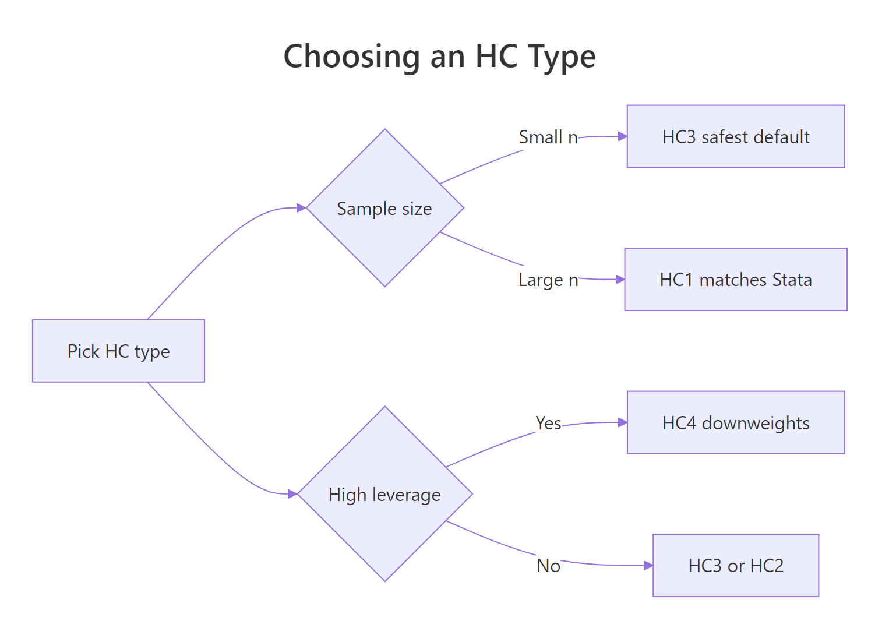
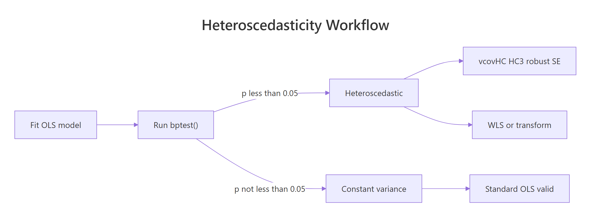

Heteroscedasticity in R: Breusch-Pagan Test & Robust Standard Errors
Heteroscedasticity means a regression's error spread changes across predictor values, which breaks the standard-error math behind every t-test, p-value, and confidence interval the model produces. In R, bptest() from lmtest flags it, and vcovHC() from sandwich gives you standard errors that stay valid even when it is present.
What Is Heteroscedasticity and Why Does It Break OLS?
OLS assumes your error spread stays constant across fitted values. When residuals fan out instead, the coefficient estimates stay unbiased, but the standard errors lie. Every p-value and confidence interval in summary(lm(...)) quietly becomes wrong. The fastest way to see this is to simulate a tiny heteroscedastic dataset and let bptest() diagnose it in two lines.
The test statistic BP = 37.42 on 1 degree of freedom gives a p-value far below 0.001. The null hypothesis of constant variance is rejected, confirming the residual spread depends on x. We can still trust the slope estimate, but the standard error that summary() would print is unreliable.
Try it: Simulate a homoscedastic version where the error standard deviation is a constant (say 3) instead of x, and confirm that bptest() no longer rejects the null.
Click to reveal solution
Explanation: A constant sd in rnorm() produces homoscedastic errors, so BP's p-value stays above 0.05 and the test does not reject constant variance.
How Does the Breusch-Pagan Test Detect Non-Constant Variance?
The test's logic is simple: if the predictors can explain the size of the residuals, the residual variance depends on X, and you have heteroscedasticity. BP formalises this by regressing the squared residuals on the original predictors and reading off the R-squared.
Formally, the test statistic is:
$$\mathrm{BP} = n \cdot R^2_{\text{aux}}$$
Where:
- $n$ is the number of observations
- $R^2_{\text{aux}}$ is the R-squared of the auxiliary regression $\hat{\varepsilon}_i^2 \sim X$
Under the null of constant variance, BP follows a chi-squared distribution with degrees of freedom equal to the number of predictors in the auxiliary regression. Let's recompute the statistic by hand so you can see what bptest() does internally.
The manual statistic lines up with bptest() exactly. This confirms the test is asking a single question: does X explain squared residual size? When the p-value is small, the answer is yes, and the spread is changing with X.
bptest(model) already studentizes residuals by default, which makes the test robust to non-normal errors. Only set studentize = FALSE if you trust the residuals are normally distributed, which is rarely the case in practice.Try it: Run the Breusch-Pagan test on iris with the model Sepal.Length ~ Petal.Length and interpret the p-value.
Click to reveal solution
Explanation: The p-value 0.089 is above 0.05, so at the 5% level we do not reject constant variance. The Sepal-Petal relationship in iris is reasonably homoscedastic.
How Do You Compute Robust Standard Errors with vcovHC?
Once BP flags heteroscedasticity you have two options: fix the model (transform, re-weight), or keep OLS but replace the standard errors with ones that do not assume constant variance. The second path is faster and is what "robust" standard errors actually are.
The formula behind them is the sandwich estimator. Regular OLS variance simplifies when errors have constant variance. The sandwich version keeps the full meat of the formula intact, so the variance estimate stays honest when errors spread unevenly across observations.
$$\widehat{\mathrm{Var}}(\hat{\beta}) = (X'X)^{-1} \, X' \hat{\Omega} X \, (X'X)^{-1}$$
Where:
- $(X'X)^{-1}$ is the outer "bread" matrix, the same as in OLS
- $X' \hat{\Omega} X$ is the inner "meat" built from squared residuals
- $\hat{\Omega}$ is a diagonal matrix with one squared residual per observation
In R, vcovHC() returns this sandwich matrix and coeftest() prints a coefficient table using it.
The coefficient estimates are identical, as expected. But the standard error on x jumps from 0.115 to 0.175, roughly a 52% increase. The t-statistic shrinks from 13.3 to 8.7. You would still reject the null, but the honest uncertainty around the slope is noticeably wider than OLS led you to believe.
vcovHC() does is give you a standard error that does not require constant variance to be correct.Try it: Use coefci() from lmtest to print a 95% robust confidence interval for every coefficient in het_model.
Click to reveal solution
Explanation: coefci() wraps coeftest() and returns confidence intervals computed with the robust variance matrix. The interval for x is wider than what confint(het_model) would give, reflecting the extra uncertainty heteroscedasticity adds.
Which HC Type Should You Use: HC0, HC1, HC2, HC3, or HC4?
vcovHC() offers five common heteroscedasticity-consistent estimators, labelled HC0 through HC4. They all use the sandwich formula; they differ in how they weight each observation's squared residual.
| HC type | What it does | When to use |
|---|---|---|
| HC0 | White's original estimator, no correction | Baseline; rarely used directly |
| HC1 | HC0 with (n / (n - k)) degrees-of-freedom correction |
Large samples; Stata default |
| HC2 | Divides each squared residual by (1 - h_ii) |
Accounts for leverage once |
| HC3 | Divides by (1 - h_ii)^2 |
Long & Ervin default; small samples |
| HC4 | Stronger leverage downweighting | When a few observations have very high leverage |
Here h_ii is the i-th diagonal of the hat matrix, a measure of how much observation i pulls the fit toward itself. The HC2 through HC4 variants downweight high-leverage points so they do not inflate the variance estimate.

Figure 1: Choosing an HC type based on sample size and leverage.
The five estimators give similar slope standard errors here because n = 200 is moderate and no single point has extreme leverage. HC3 is slightly higher than HC1 by design; HC4 is the highest because it downweights leverage points the hardest.
vcovHC() uses it by default if you omit the type argument. Stata users who have always worked with HC1 can switch safely.Try it: Compute the percent difference between HC3 and HC1 slope standard errors.
Click to reveal solution
Explanation: HC3 is about 0.6% larger than HC1 here. In tiny samples or with influential observations, the gap between the two can reach 10% or more.
What Should You Do After Confirming Heteroscedasticity?
A small bptest() p-value is a diagnosis, not a prescription. You have four reasonable paths forward, listed roughly in order of effort.

Figure 2: Heteroscedasticity detection and remediation workflow.
- Robust standard errors. Keep OLS as-is, swap in
vcovHC()SEs. Fastest, makes no assumption about the variance structure. - Weighted least squares (WLS). If you have a good guess for how the variance scales with X, reweight observations by
1 / estimated_variance. - Transform the outcome. A log transform flattens variance that grows multiplicatively, but it changes what the slope means.
- Respecify the model. Heteroscedasticity often signals a missing predictor or wrong functional form. Fixing the specification is usually better than patching the SEs.
Let's try WLS on the simulated data. Since we know the error spread scales with x, weights of 1 / x^2 (the inverse variance) should restore homoscedastic residuals.
WLS downweights the high-variance observations, so the residuals become nearly homoscedastic. The BP p-value is now 0.29, safely above 0.05. Notice the slope estimate also shifts slightly because WLS optimises a different criterion than OLS.
lm(y ~ x) to lm(log(y) ~ x) changes the slope from "units of y per unit of x" to "percent change in y per unit of x." Use a log when the relationship is genuinely multiplicative, not to silence a BP test.Try it: Refit WLS using 1 / fitted(het_model)^2 as the weights, and compare the slope to OLS.
Click to reveal solution
Explanation: Using fitted values as a variance proxy is a common trick when variance grows with the expected value of y. The slope stays close to the true value of 1.5.
Practice Exercises
Exercise 1: Full diagnostic workflow on mtcars
Fit the model mpg ~ hp + wt on mtcars. Run bptest() to check for heteroscedasticity. Whatever the result, compute HC3 robust standard errors and save the coeftest() output to my_robust.
Click to reveal solution
Explanation: BP p-value 0.64 shows no strong evidence of heteroscedasticity on this mtcars model, but HC3 is a cheap insurance policy and here barely changes the standard errors.
Exercise 2: Write a one-line diagnostic function
Write a function diag_het(model) that returns a one-row data frame with columns bp_stat, bp_p, and hc3_max_inflation. The third column is the largest ratio of HC3 standard error to OLS standard error across coefficients, a "how much do the SEs move" number.
Click to reveal solution
Explanation: The function packages three diagnostics colleagues actually read: is variance non-constant, how bad is the evidence, and how much do the standard errors shift when you switch to HC3.
Exercise 3: Simulation, OLS vs HC3 CI coverage
Run 200 simulations of heteroscedastic samples. For each sample, compute the 95% OLS confidence interval and the 95% HC3 confidence interval for the slope. Report the fraction of CIs that contain the true slope of 1.5. Which method is closer to 95%?
Click to reveal solution
Explanation: OLS intervals are too narrow under heteroscedasticity, so they contain the truth only about 85% of the time instead of the nominal 95%. HC3 lands within one percentage point of the target. The simulation is the strongest evidence you will ever see for using robust SEs when BP fires.
Complete Example
Putting the full detect-and-fix workflow together on real data.
BP returns p = 0.52, so there is no evidence of heteroscedasticity on this mtcars specification. The HC3 standard errors are similar to OLS, as expected when variance really is constant. On a dataset where BP fires, this same five-step recipe swaps in standard errors you can actually trust without changing the model.
Summary
| Function | Package | Purpose |
|---|---|---|
bptest(model) |
lmtest | Breusch-Pagan test for non-constant variance |
vcovHC(model, type = "HC3") |
sandwich | Heteroscedasticity-consistent covariance matrix |
coeftest(model, vcov = ...) |
lmtest | Reprint the coefficient table with a supplied vcov |
coefci(model, vcov = ...) |
lmtest | Confidence intervals with a supplied vcov |
Key takeaways:
- Heteroscedasticity biases standard errors, not coefficients.
- Breusch-Pagan tests whether the predictors explain the squared residuals.
- Robust standard errors use the sandwich formula to stay valid under non-constant variance.
- HC3 is the recommended default; HC1 matches Stata; HC4 handles high-leverage outliers.
References
- Breusch, T. S., & Pagan, A. R. (1979). "A simple test for heteroscedasticity and random coefficient variation." Econometrica, 47(5), 1287-1294. Link
- White, H. (1980). "A heteroskedasticity-consistent covariance matrix estimator and a direct test for heteroskedasticity." Econometrica, 48(4), 817-838. Link
- Long, J. S., & Ervin, L. H. (2000). "Using heteroscedasticity consistent standard errors in the linear regression model." The American Statistician, 54(3), 217-224. Link
- Zeileis, A. (2004). "Econometric computing with HC and HAC covariance matrix estimators." Journal of Statistical Software, 11(10). Link
- sandwich package documentation. Link
- lmtest package documentation. Link
- UVA Library, "Understanding Robust Standard Errors." Link
Continue Learning
- Linear Regression Assumptions in R: Test All 5 and Know What to Do When They Fail - The parent post covering every OLS assumption, including the homoscedasticity check this article expands on.
- Regression Diagnostics in R - A wider diagnostic toolkit including leverage, influence, and residual plots.
- Outlier Detection in R - When a few extreme observations drive the heteroscedasticity, identifying and handling outliers is often the right fix before reaching for robust standard errors.